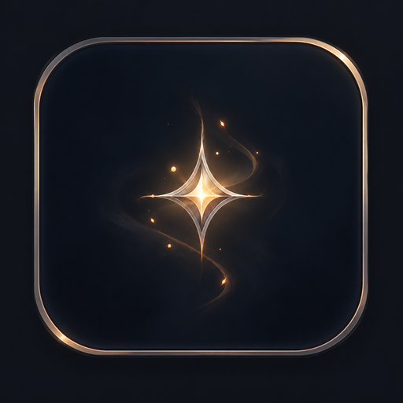
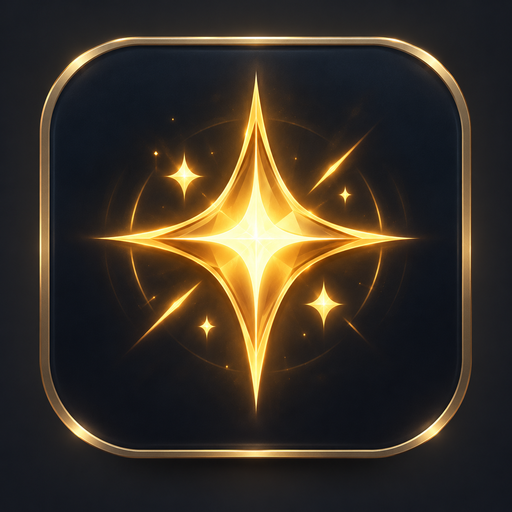
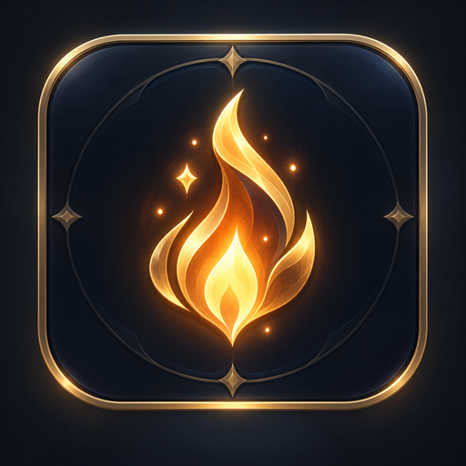
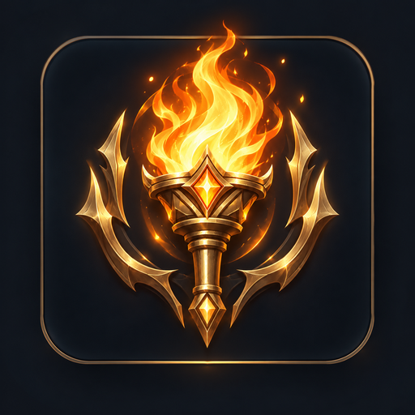
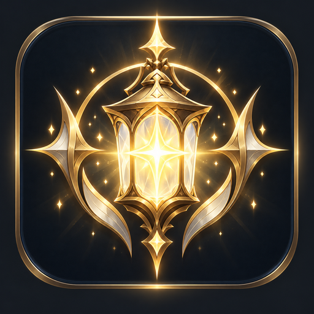
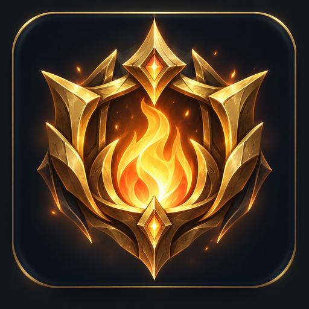
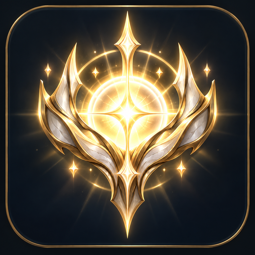
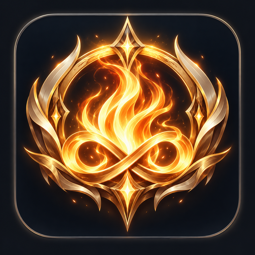
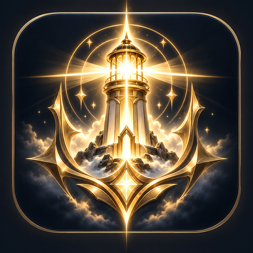

Každá účast zažehne další Jiskru.
Propoj svůj Světlonošský účet s KICKem. Hlasuj, buď s námi na streamu, zapojuj se do komunity a sbírej Jiskry, které můžeš směnit za odměny.
Jiskry získáváš tím, že jsi součástí dění.
Nechceme odměňovat bezmyšlenkovitý spam. Jiskry jsou navázané na ověřenou účast a smysluplnou interakci.
Načítám pravidla
Chvilku vydrž…
Jiskry neutrácejí tvůj postup.
Hodnost se počítá podle všech Jisker, které jsi kdy získal. Utracené Jiskry snižují jen aktuální zůstatek.

0 ✦ Zbloudilá jiskra
100 ✦ Jiskra
300 ✦ Plamínek
750 ✦ Pochodeň
1 500 ✦ Světlonoš
3 000 ✦ Strážce plamene
6 000 ✦ Nositel světla
10 000 ✦ Věčný plamen
20 000 ✦ Maják SvětlonošůObchod Jisker a tvůj inventář.
Nakupuj varianty rámečků, pozadí, efektů a kosmetických odznaků. Hodnostní odznaky se nekupují — odemykají se automaticky postupem.
KICK je součást identity.
Pro aktivaci Jisker je potřeba propojit KICK účet. Díky tomu používáme skutečnou KICK přezdívku a můžeme ověřovat aktivity související se streamem.
Jiskry nejsou měna.
Jde o komunitní věrnostní body bez peněžní hodnoty. Automatické systémy mají limity, aby spam nebo opakované klikání nevytvářely neférovou výhodu.